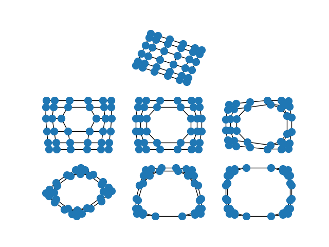

Note
Click here to download the full example code
Spectral Embedding¶
The spectral layout positions the nodes of the graph based on the
eigenvectors of the graph Laplacian \(L = D - A\), where \(A\) is the
adjacency matrix and \(D\) is the degree matrix of the graph.
By default, the spectral layout will embed the graph in two
dimensions (you can embed your graph in other dimensions using the
dim argument to either draw_spectral() or
spectral_layout()).
When the edges of the graph represent similarity between the incident nodes, the spectral embedding will place highly similar nodes closer to one another than nodes which are less similar.
This is particularly striking when you spectrally embed a grid graph. In the full grid graph, the nodes in the center of the graph are pulled apart more than nodes on the periphery. As you remove internal nodes, this effect increases.
import matplotlib.pyplot as plt
import networkx as nx
options = {
'node_color': 'C0',
'node_size': 100,
}
G = nx.grid_2d_graph(6, 6)
plt.subplot(332)
nx.draw_spectral(G, **options)
G.remove_edge((2, 2), (2, 3))
plt.subplot(334)
nx.draw_spectral(G, **options)
G.remove_edge((3, 2), (3, 3))
plt.subplot(335)
nx.draw_spectral(G, **options)
G.remove_edge((2, 2), (3, 2))
plt.subplot(336)
nx.draw_spectral(G, **options)
G.remove_edge((2, 3), (3, 3))
plt.subplot(337)
nx.draw_spectral(G, **options)
G.remove_edge((1, 2), (1, 3))
plt.subplot(338)
nx.draw_spectral(G, **options)
G.remove_edge((4, 2), (4, 3))
plt.subplot(339)
nx.draw_spectral(G, **options)
plt.show()
Total running time of the script: ( 0 minutes 0.179 seconds)